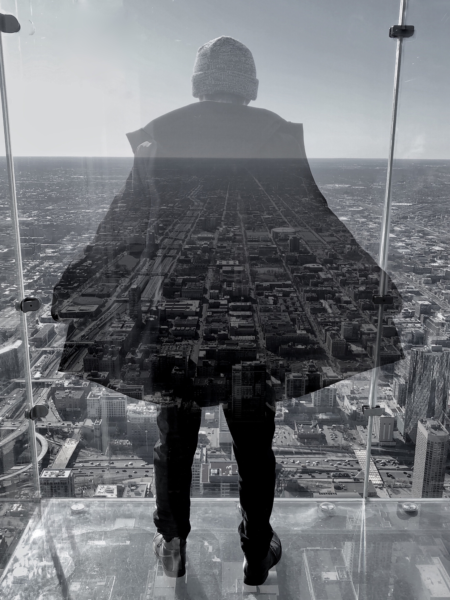
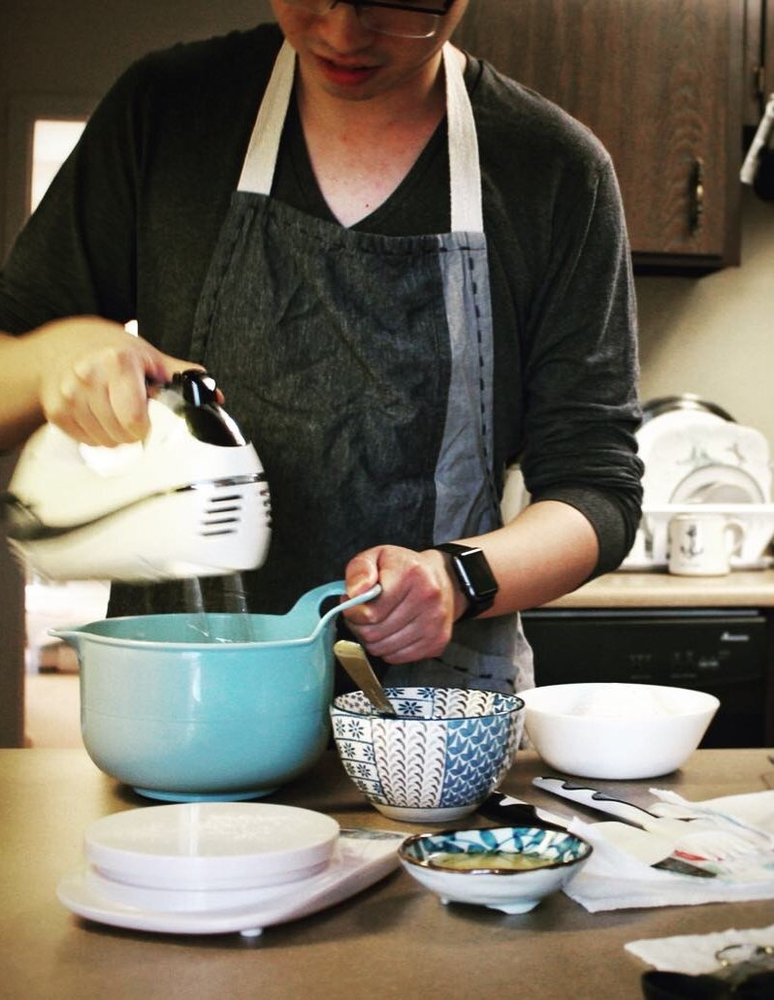

  
Qinan Hu
Education
Cornell University
Ph.D. 2014-2020
Major: Molecular Biology
Minor: Developmental Biology
Peking University
B.S. 2010-2014
Major: Biological Sciences
Research
Ph.D. Thesis (2014 – Present)
“The trigger and consequences of calcium influx during Drosophila egg activation”
Advisor: Dr. Mariana Wolfner, Cornell University
- Combined inhibitor test, germline RNAi and germline specific CRIPSR/Cas9 knockout to identify Trpm as the channel mediating calcium influx during Drosophila egg activation.
- Visualized calcium dynamics during egg activation, engineered genetic calcium sensor and tested them using confocal and light sheet microscopy.
- Developed and optimized a highly efficient CRISPR/Cas9 mediated germline specific knockout protocol for Drosophila (collaboration with Dr. Chun Han).
- Identified region specific pressure sensitivity of mature oocytes using microneedle manipulation and microfluidic chamber (collaboration with Dr. Jan Lammerding and Dr. Chih-kuan Tung).

- Discovered F-actin dynamic changes and its co-regulation with calcium during Drosophila egg activation (collaboration with Dr. Timothy Weil).
- Investigated metal element level changes during Drosophila egg activation using X-Ray Fluorescence Microscopy at Argonne National Laboratory (collaboration with Drs. Francesca Duncan, Teresa Woodruff and Thomas O’Halloran).
B.S. Thesis (2013 – 2014)
“Purification and activity analysis of hydroxylase domain of JBP1, a DNA binding protein”
Advisor: Dr. Chengqi Yi, Peking University
- Constructed seven truncated protein constructs of JBP1 catalytical domain
- Attempted various methods for the purification of insoluble proteins
- Successfully purified two target protein with MBP fusion protein tag and analyzed their activity with HPLC
Summer Research Internship (2013)
“Study on the phosphorylation of TFEB by MAP4K3 in nutrient deprivation induced autophagy”
Advisor: Dr. Albert La Spada, University of California, San Diego
- Optimized several immunocytochemistry protocols for TFEB and lysosome visualization and co-localization using confocal microscopy
- Analyzed the effect of TFEB phosphorylation at serine 3 with phosphomimetic analysis
- Identified three potential proteins that may interact with MAP4K3 with co-IP assay
Publications
- Qinan Hu, Mariana F. Wolfner. “Drosophila Trpm mediates calcium influx during egg activation” (PNAS, under review)
- Anna H. York-Andersen*, Qinan Hu*, Ben Wood, Mariana F. Wolfner, Timothy T. Weil. “A calcium mediated actin redistribution at egg activation in Drosophila” (Submitted) *Equal contribution authors
Presentations
- Poster: “Dissecting the triggers of calcium wave during Drosophila egg activation”, Cornell/Pittsburgh Reproductive Genomics Symposium, 2018
- Poster: “Dissecting the triggers of calcium wave during Drosophila egg activation”, Gordon Research Conference for Fertilization and Activation of Development, 2017
- Poster: “Dissecting the mechanisms of calcium wave during Drosophila egg activation”, The Allied Genetics Conference, 2016
Experience
Hornors
- George P. Hess Travel Award, Cornell University, 2019
- Mann Outstanding Graduate Student Award, finalists, Cornell University, 2019
- Graduate School Research Travel Grant, Cornell University, 2018
- Undergraduate Research Training Program, 2nd prize, Peking University, 2014
Mentoring
- Mentor of “Choose Development!” Undergraduate Summer Research Program, 2018.6 – 2018.9
- Graduate Teaching Assistant of BioMG2801 Genetics Lab course, 2016.1 – 2016.5
Professional Skill Development
- Mastering Software Development in R, a 5-course specialization by Johns Hopkins University on Coursera. Specialization Certificate earned on April 30, 2019 (Object-oriented programming, building and testing R packages, developing visualization tools).
- Introduction to Data Science in Python by University of Michigan on Coursera. Certificate earned on April 13, 2019 (Python programming, numpy, pandas).
- Data Science, a 10-course specialization by Johns Hopkins University on Coursera. Specialization Certificate earned on January 11, 2019 (R programming, data analysis, regression model, markup language, practical machine learning, tidyverse, ggplot2).
- Machine Learning by Stanford University on Coursera. Certificate earned on March 28, 2018.
“If the 20th century was the century of physics, the 21st century will be the century of biology.”